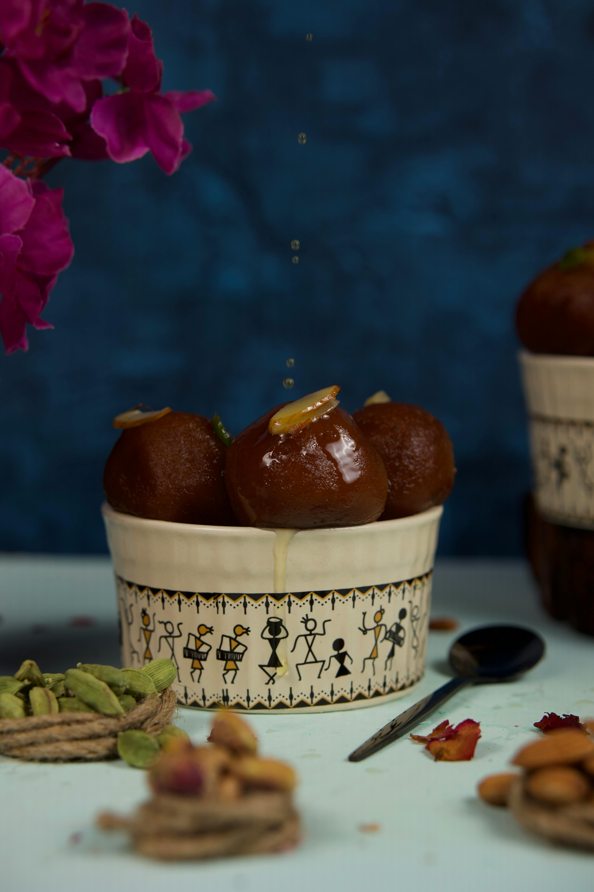

Gulab jamun
About This Recipe
Gulab Jamun is a beloved Indian dessert featuring soft, melt-in-your-mouth milk-solid dumplings soaked in a fragrant rose and cardamom-infused sugar syrup. Served warm or chilled, these golden orbs are rich, comforting, and perfect for festive moments or sweet indulgence
Ingredients
- 1 cup Milk Powder (non-fat)
- ¼ cup All-Purpose Flour (maida)
- ¼ tsp Baking Soda
- 2 tbsp Ghee (melted)
- 3-4 tbsp Milk (or as needed)
- Oil/Ghee (for deep frying)
For Sugar Syrup:
- 1½ cups Sugar
- 1½ cups Water
- 4-5 Green Cardamom Pods (crushed)
- 1 tsp Rose Water (optional)
- 1 tsp Lemon Juice
Instructions
- Make Syrup: Boil sugar and water with cardamom until slightly sticky (1-string consistency). Add rose water and lemon juice. Keep warm.
- Prepare Dough: Mix milk powder, flour, and baking soda. Add ghee and milk gradually to form a soft dough (no cracks).
- Shape Jamuns: Roll dough into small, smooth balls (no cracks) of equal size (½-inch diameter).
- Fry: Heat oil/ghee on low-medium heat. Fry jamuns gently, stirring until golden brown (they expand while frying).
- Soak: Drain fried jamuns and immediately transfer to warm syrup. Let soak for 2-3 hours.
- Serve: Garnish with chopped nuts. Serve warm or chilled!
Tips
- Dough Texture: If too dry, add milk drop by drop; if sticky, dust with flour.
- Frying: Maintain low-medium heat to cook jamuns evenly without burning.
- Syrup Consistency: 1-string = syrup coats the back of a spoon (like honey).